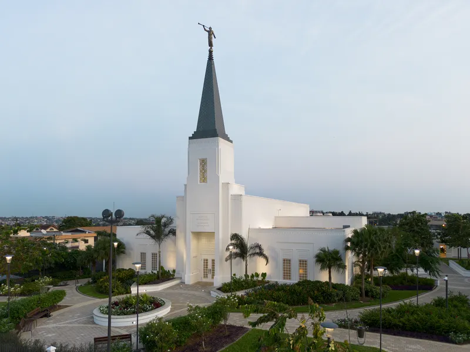

Abidjan Cote d'Ivoire

About the Temple
Abidjan Cote d'Ivoire Temple is the seventh Temple of Africa and the first for Ivory Cost (Cote d'Ivoire)
Dedicated The 25 may 2025 Dedicatory prayer
Visiting Information
- Location: Lot 118 Riviera Attoban Cocody Abidjan Cote d'Ivoire.
- Hours: Check Ordinance Schedule
- Phone +225 25 0 18010
- Housing Available